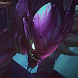
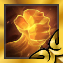

롤토체스 18.5c 패치, 카직스·덩굴정령·정의의 손길 3건 수치 정리
롤토체스 18.5c 패치가 궁금해서 10월 30일 금요일 아침에 공식 패치 노트를 다시 열어 봤는데요, 18.5 본문 맨 위에 '추가 패치 노트 · 10월 28일' 절이 새로 얹혀 있더라고요. 수요일인 10월 28일에 바뀐 건 카직스·덩굴정령·정의의 손길 세 가지고, 수치로 세면 여섯 줄이에요. 공식 노트에는 18.5c라는 이름이 따로 없는데, 롤체지지 같은 곳에서 이 추가분을 18.5c라고 부르길래 저도 그렇게 부를게요. 한 표에 옮겨 놓고 보니 카직스와 정의의 손길은 숫자가 내려가기만 하고, 덩굴정령만 한쪽은 내려가고 한쪽은 올라가서 눈에 확 들어오더라고요.
롤토체스 18.5c 패치에서 바뀐 건 3건, 수치 6줄
공식 10월 28일 추가 패치에서 바뀐 건 카직스·덩굴정령·정의의 손길 3가지, 수치로는 6개예요.
| 대상 | 항목 | 변경 전 | 변경 후 |
|---|---|---|---|
| 카직스 | 기본 피해량 | 주문력 250/345/500 | 주문력 230/310/450 |
| 카직스 | 고립 피해량 | 주문력 280/390/590 | 주문력 250/350/530 |
| 덩굴정령 | 방어력 무시(주문력) | 25% | 10% |
| 덩굴정령 | 방어력 무시 기본 | 25% | 30% |
| 정의의 손길 | 모든 피해 흡혈 | 15% | 12% |
| 찬란한 정의의 손길 | 모든 피해 흡혈 | 30% | 25% |
공식 노트가 이 세 가지를 같이 손본 이유는 18.5 첫 주의 흐름에 있어요. 덩굴정령 상향이 (7) 협곡야수 효과와 맞물리면서 탱커가 종잇장처럼 찢겼고, 카직스는 하향이 이어졌는데도 조건만 맞으면 따라올 챔피언이 없었다는 거죠. 정의의 손길은 이 둘이 덕을 보는 아이템이라서, 세트 초반 흡혈 상향 뒤로 핵심 딜러가 흡혈 탱커처럼 버티는 걸 줄이려고 같이 내려간 모양새예요.
확인 위치: 공식 패치 노트는 '10월 28일'로만 적고 적용 시각은 적지 않았고, 롤체지지는 같은 내용을 18.5c로 분류해 두었어요. 적용 시각이 공지되면 이 박스를 시각 한 줄로 바꿔 주세요.
카직스 하향, 기본·고립 피해량이 성급마다 20~60씩 줄었어요
카직스는 두 피해량 모두 성급마다 20~60씩 줄었어요.

이번 추가 패치에서 피해량이 내려간 카직스예요.
이미지: 라이엇게임즈 챔피언 아이콘(Community Dragon)
카직스의 스킬 '공포 감지'는 3칸 안에서 가장 멀리 있는 적에게 도약해 마법 피해를 주는데, 대상 옆에 아군이 없는 고립 상태면 피해가 더 크고 마나도 10 얻거든요. 그래서 이번에 고립 피해량이 같이 내려간 게 체감이 큰 부분이죠.
| 성급 | 기본 피해량 감소 | 고립 피해량 감소 |
|---|---|---|
| 1성 | 20 (250→230) | 30 (280→250) |
| 2성 | 35 (345→310) | 40 (390→350) |
| 3성 | 50 (500→450) | 60 (590→530) |
18.5 본 패치에서도 카직스는 기본 255/360/515에서 250/345/500으로, 고립 285/410/605에서 280/390/590으로 한 번 내려갔었는데요, 그때는 1성 기준 5씩이었고 이번엔 20과 30이라 폭이 훨씬 커요. 3성은 기본이 50, 고립이 60 빠지거든요. 줄어든 폭이 가장 큰 구간이에요.
덩굴정령 방어력 무시, 주문력 몫은 10%로 기본 몫은 30%로
덩굴정령은 방어력 무시의 주문력 비례 몫이 25%에서 10%로 내려가고, 기본 몫은 25%에서 30%로 올랐어요.

덩굴정령은 아이템이나 특성이 아니라 4코스트 챔피언이에요.
이미지: 라이엇게임즈 챔피언 아이콘(Community Dragon)
주문력 비례 몫은 15%p 줄고 기본 몫은 5%p 늘었으니 두 숫자가 정반대로 움직인 셈인데, 합친 방어력 무시가 늘었는지 줄었는지는 덩굴정령이 주문력을 얼마나 쌓았느냐에 따라 달라져요. 스킬 '핏빛 분노'는 8초 동안 공격력이 오르고 그 사이 방어력을 무시하는 구조라, 이 수치가 곧 스킬 화력이라고 보시면 돼요.
18.5 때의 변경과 헷갈리기 쉬운데요, 18.5에서는 방어력 무시가 '20% + 주문력 25%'에서 '25% + 주문력 25%'로 올랐고, 우두머리 표식의 체력 회복량은 4%에서 5%로 올랐다가 18.5b에서 4%로 되돌려졌어요. 이번 10월 28일 변경은 회복량이 아니라 방어력 무시 쪽이에요.
정의의 손길 흡혈 12%로, 찬란한 정의의 손길은 25%로
정의의 손길은 이번에 흡혈이 깎인 아이템이에요. 일반형과 찬란형의 줄어든 폭은 아래 두 줄로 볼게요.

왼쪽이 정의의 손길, 오른쪽이 찬란한 정의의 손길이에요.
이미지: 라이엇게임즈 아이템 아이콘(Community Dragon)
- 일반형: 모든 피해 흡혈 15%에서 12%로, 3%p 감소
- 찬란형: 모든 피해 흡혈 30%에서 25%로, 5%p 감소
정의의 손길은 체력이 절반을 넘으면 공격력과 주문력이 2배가 되고, 절반 아래로 내려가면 모든 피해 흡혈이 2배가 되는 아이템이에요. 기본 흡혈 숫자가 내려가면 이 두 번째 효과로 얻는 흡혈도 같이 줄어드니, 숫자 3%p보다 체감 폭은 조금 더 클 수 있겠네요. 공식이 짚은 이유는 근접 딜러가 이 아이템 하나로 딜과 생존을 다 챙겼다는 점이라서, 흡혈 쪽만 정확히 눌렀다고 보시면 됩니다.
지금 상위 덱에서는 덩굴정령이 어디에 들어 있나, 다음에 볼 것까지
롤체지지 덱 목록 46개 중에서 덩굴정령 핵심에 정의의 손길이 같이 들어 있는 덱은 5개고, 그중 점유율 1위가 협곡야수 돌거북 덱이에요. 카직스를 핵심으로 쓰는 덱은 처형자 카직스(1.46%)와 경쟁자 카직스(0.43%) 2개뿐이고, 둘 다 정의의 손길을 들어요.
롤체지지 마스터+ 기준으로 10월 30일 오전에 본 최근 2일 데이터예요. 아직 18.5b 때 판이 섞여 있을 수 있어서, 변경 뒤 성적이라기보다 지금 덱 위치 정도로만 봐 주세요.
| 덱 | 점유율 | 표본 | 1위율 | 순방률 | 평균 |
|---|---|---|---|---|---|
| 협곡야수 돌거북 (1위) | 7.68% | 30,936판 | 12.5% | 55.5% | 4.20 |
| 협곡야수 드레이븐 (2위) | 7.14% | 28,773판 | 25.6% | 56.4% | 4.00 |
- 돌거북 덱: 핵심 4인이 덩굴정령(코어 1순위)·장로 드래곤·돌거북·감시자고, 덩굴정령 아이템 중 하나가 정의의 손길이에요. 협곡야수는 활성 수 8(골드 구간)까지 가요.
- 드레이븐 덱: 협곡야수 활성 수 4 구성이라 덩굴정령도, 정의의 손길을 든 유닛도 없어요. 두 덱을 같이 겹쳐 쓴다고 읽으시면 안 돼요.
돌거북 덱에서 덩굴정령이 정의의 손길을 드는 모습이에요.
| 대상 | 등장률 | 평균 등수 | 표본 |
|---|---|---|---|
| 덩굴정령 | 11.77% | 4.34 | 35,024판 |
| 카직스 | 2.30% | 5.09 | 6,840판 |
| 정의의 손길 | 18.35% | 4.22 | 54,592판 |
| 찬란한 정의의 손길 | 0.33% | 4.30 | 983판 |
같은 기준으로 챔피언과 아이템을 하나씩 따로 뽑은 값이에요. 카직스는 핵심으로 쓰는 덱이 작아서 덱 목록에서는 점유율이 낮지만 챔피언 한 명으로는 6,840판에 나왔고, 정의의 손길은 이 중 가장 흔해서 54,592판이나 되더라고요.
변경 전후 성적은 18.5c 판 데이터가 더 쌓이면 다시 정리해 올게요.
확인 위치: 인게임 덩굴정령 스킬 툴팁(주문력을 쌓은 상태 기준), 롤체지지 같은 필터를 이틀 뒤 다시 조회. 지난 10월 27일 조회 때 점유율 15.57%였던 '협곡야수 덩굴정령' 덱 이름은 오늘 목록에 없고 돌거북 덱이 1위인데, 이름이 바뀐 건지 인기가 내려간 건지는 이 데이터만으로는 갈리지 않아요.
자주 묻는 질문
Q. 18.5c와 10월 28일 추가 패치는 같은 건가요?
네, 같은 변경이에요. 공식 노트에는 '추가 패치 노트 10월 28일'로만 적혀 있고, 롤체지지 같은 사이트에서 18.5c라고 부르는 거라 검색할 때는 18.5c로 찾으시는 게 편해요.
Q. 덩굴정령은 특성인가요?
아니요, 4코스트 챔피언이고 특성은 협곡야수와 약탈자예요. 이름이 비슷한 아이템 '붉은 덩굴정령'은 곡궁 두 개로 만드는 별개 아이템이고, 이번에 숫자가 바뀐 건 챔피언 쪽이에요.
숫자만 보면 카직스와 정의의 손길은 한 방향으로 내려가고 덩굴정령만 방향이 갈려요. 체감은 직접 한 판 돌려 보시는 게 제일 빠를 거예요~
✔ 롤토체스 같이 보기 좋은 내용
· 롤토체스 덱 티어 18.5b 마스터+ 평균등수·순방률 기준
· 롤토체스 추천메타 요정 트리스타나 덱, 18.5 상향 뒤 성적
· 롤토체스 기원자 아리 조합 아이템 정리, 특성 빌드까지 한 번에
참고한 곳
· 라이엇게임즈 공식 — 전략적 팀 전투 18.5 패치 (추가 패치 노트 10월 28일 포함, 조회 2026.10.30)
· 롤체지지 — 덱·챔피언·아이템 통계와 패치노트 (조회 2026.10.30)